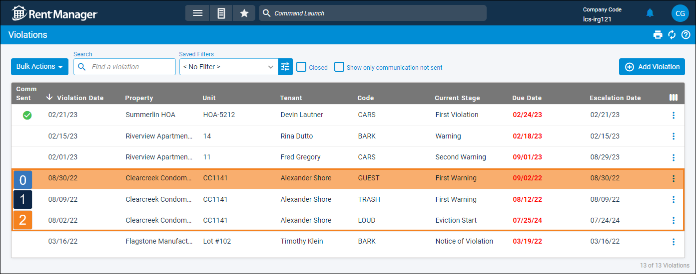

Source: https://rmxhelp.rentmanager.com/Topics/Express/KB/Script-Index-Violation.htm
Violation Indexing
In scripting, an index is how instances of an entity or other record are counted in a script. Indexing manages the one-to-many relationship that occurs between two classes.
When the Violation class is used as a child class in a script (e.g., Tenant().Violation().Function), an index can be specified to uniquely identify violations that are associated with the preceding class. For example, tenants can be associated with multiple past or current violations, and indexing can be used to identify each of those violations.
Violation Index Relationships
The Violation class may use an index parameter when it is preceded by certain classes. Each class is described below.
Violations are indexed by Violation Date, from most recent to oldest. The most recent violation has an index of 0, the second most recent violation has an index of 1, and so on. To examine the oldest violation, enter an index of ViolationCount-1, as in Violation(ViolationCount-1).
Tenant.Violation Indexing
You can determine a violation's index for a tenant from the Violations page.

[Tenant.Violation(2).ViolationDate]
Using the information in the above image, this returns 08/02/2022, the violation date of the third most recent violation for the tenant Alexander Shore.
Unit.Violation Indexing
You can determine a violation's index for a unit from the Violations page.

[Unit.Violation(1).ViolationDate]
Using the information in the above image, this returns 08/09/2022, the violation date of the second most recent violation at the unit CC1141.